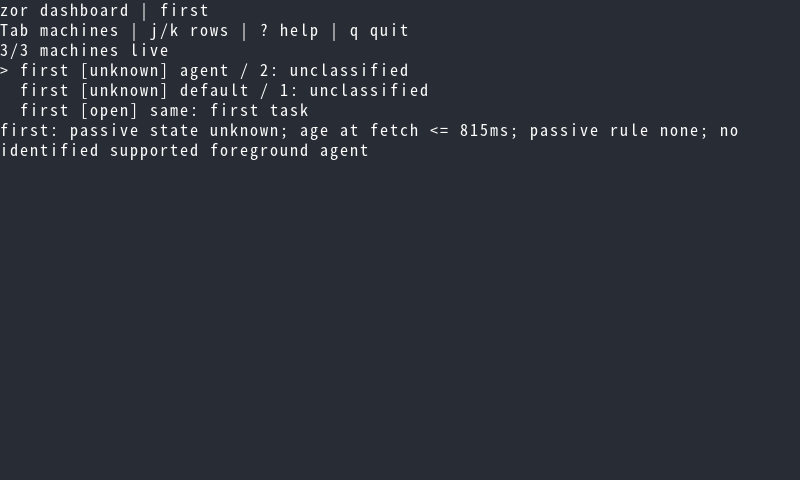
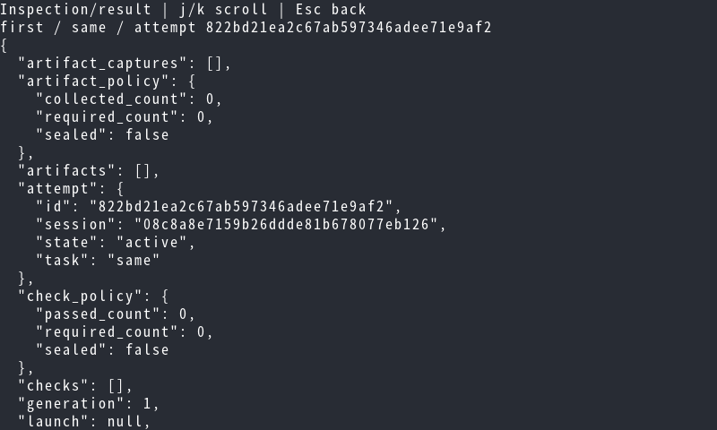
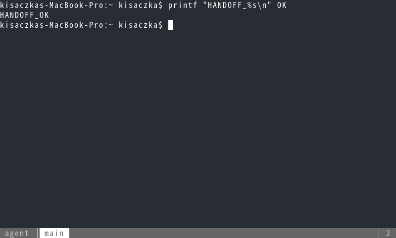
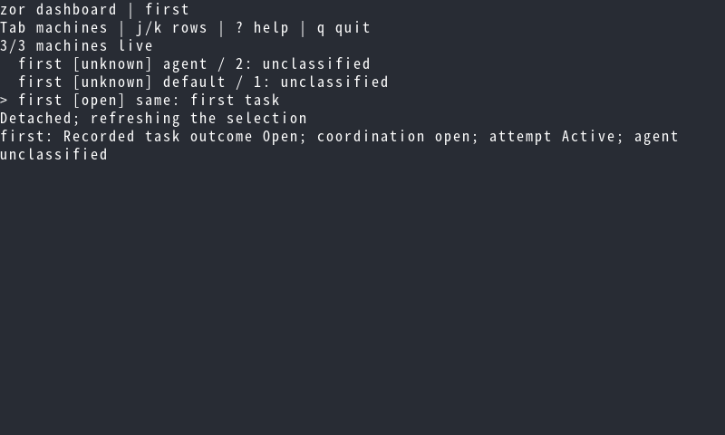
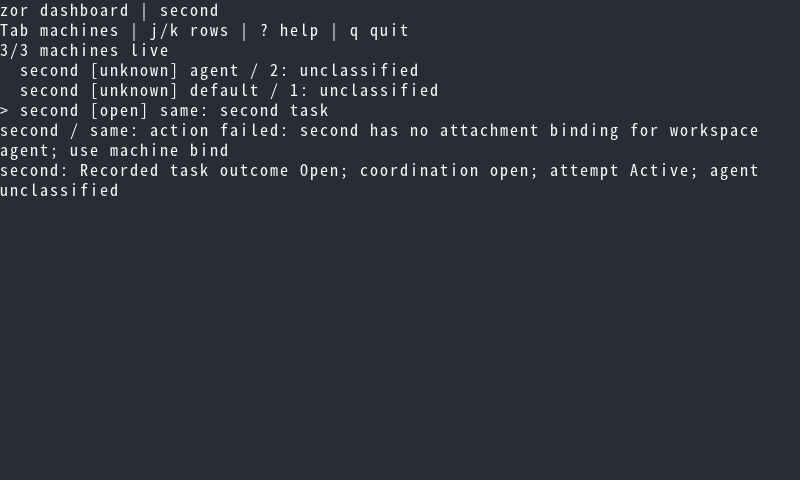
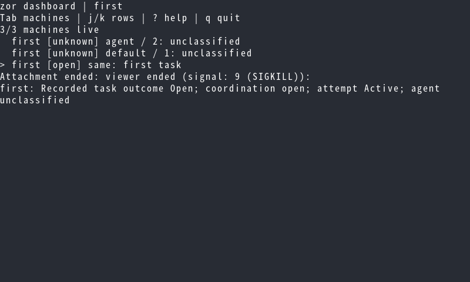
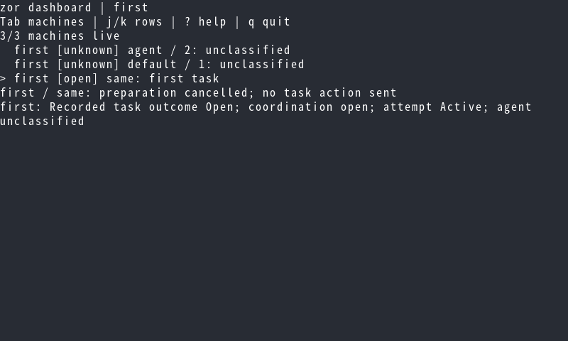
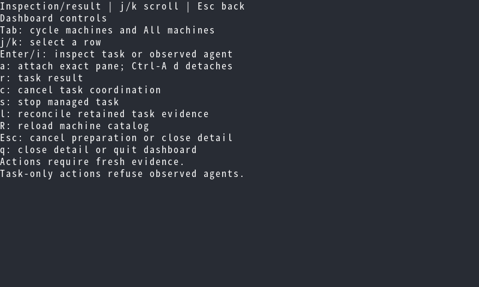

fux Betamax evidence
Captured test checkpoints. Rendering alone is not a visual approval.
terminal-24135-QucNQP/0000.png: 01-machine-scope
terminal-24151-sxtDcI/0000.png: 02-inspection
terminal-24158-FYfq0D/0000.png: 03-viewer
terminal-24173-87qWSQ/0000.png: 04-return
terminal-24181-gvJyOn/0000.png: 05-missing-binding
terminal-24186-DhrFZ2/0000.png: 06-viewer-killed
terminal-24197-6nb3CD/0000.png: 07-preparation-cancelled
terminal-24205-iCcau9/0000.png: 12-help